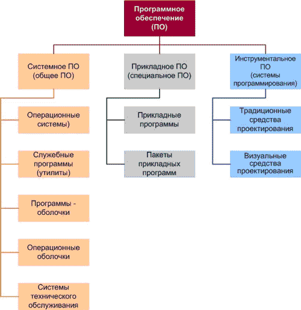
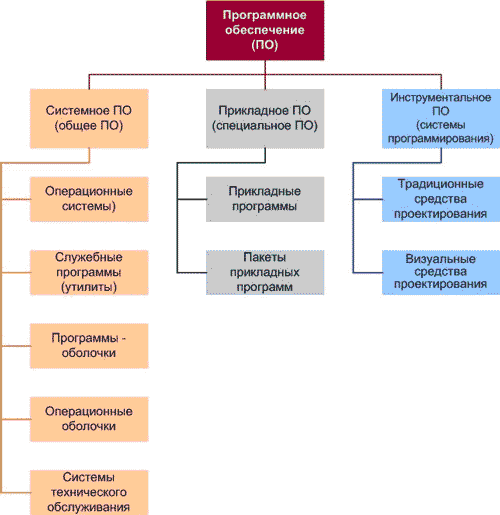

Різне
Закінчення
Поштова скринька
Повернутись
Історія програмного забезпечення та ІКТ.
Мета: Ввести в короткий історичний екскурс програмного забезпечення і інформаційно-комунікаційних технологій. Виділити основні тенденції розвитку ПЗ.
Вступ.
Електронні обчислювальні машини є ефективним засобом для виконання будь-яких
операцій з інформацією. Але для цього необхідно створити для комп'ютера інструкцію на
зрозумілій йому мові - програму, яка Пояснює як саме треба обробити інформацію.
Власне, сам комп'ютер абсолютно не володіє ніякими знаннями - вони усі знаходяться у виконуваних на ньому програмах.
Залежно від програми, можна перетворювати ПК на робоче місце письменника або
вченого, дизайнера або відеорежисера, радіоведучого або архітектора.
З розширенням можливостей ПК користувачу ПЗтрібно усе більш різноманітне програмне
забезпечення (ПЗ) для вирішення тих або інших завдань.
Перші пакети програмного забезпечення були простими тематичними підбірками додатків
для вирішення певних завдань в тій або іншій сфері.
Сучасний програмний пакет є складною програмною системою, який включає
спеціалізовані системні і мовні засоби.
 Наприклад, в історії розвитку обчислювальних прикладних програм можна виділити
чотири покоління, кожне з яких характеризується певними особливостями, які входять до
складу компонентів - вхідних мов, предметного, системного забезпечення.
В якості вхідних мов прикладні програми першого Покоління використовували
універсальні мови програмування (Фортран або Алгол 60 ) або мови управління
завданнями операційних систем. Складання завдань на таких мовах практично не
відрізнялося від того, яке пише програма алгоритмічною мовою.

У другому Поколінні розробка прикладних програми відбувалася за участю системних
програмістів. Це призвело до появи спеціалізованих вбудованих мов на базі універсальних
мов програмування. Перекладач з такої мови був препроцесором до транслятора
відповідної алгоритмічної мови.
Третій етап розвитку прикладних програм пов'язано з появою самостійних вхідних мов,
орієнтованих на простих, буденних користувачів
Особлива увага приділялася системним компонентам таким, що забезпечує простоту і
зручність. Це досягається головним чином за рахунок такої спеціалізації вхідних мов і
включення до складу пакету засобів автоматизованого планування обчислень.
Наприклад, в історії розвитку обчислювальних прикладних програм можна виділити
чотири покоління, кожне з яких характеризується певними особливостями, які входять до
складу компонентів - вхідних мов, предметного, системного забезпечення.
В якості вхідних мов прикладні програми першого Покоління використовували
універсальні мови програмування (Фортран або Алгол 60 ) або мови управління
завданнями операційних систем. Складання завдань на таких мовах практично не
відрізнялося від того, яке пише програма алгоритмічною мовою.

У другому Поколінні розробка прикладних програми відбувалася за участю системних
програмістів. Це призвело до появи спеціалізованих вбудованих мов на базі універсальних
мов програмування. Перекладач з такої мови був препроцесором до транслятора
відповідної алгоритмічної мови.
Третій етап розвитку прикладних програм пов'язано з появою самостійних вхідних мов,
орієнтованих на простих, буденних користувачів
Особлива увага приділялася системним компонентам таким, що забезпечує простоту і
зручність. Це досягається головним чином за рахунок такої спеціалізації вхідних мов і
включення до складу пакету засобів автоматизованого планування обчислень.